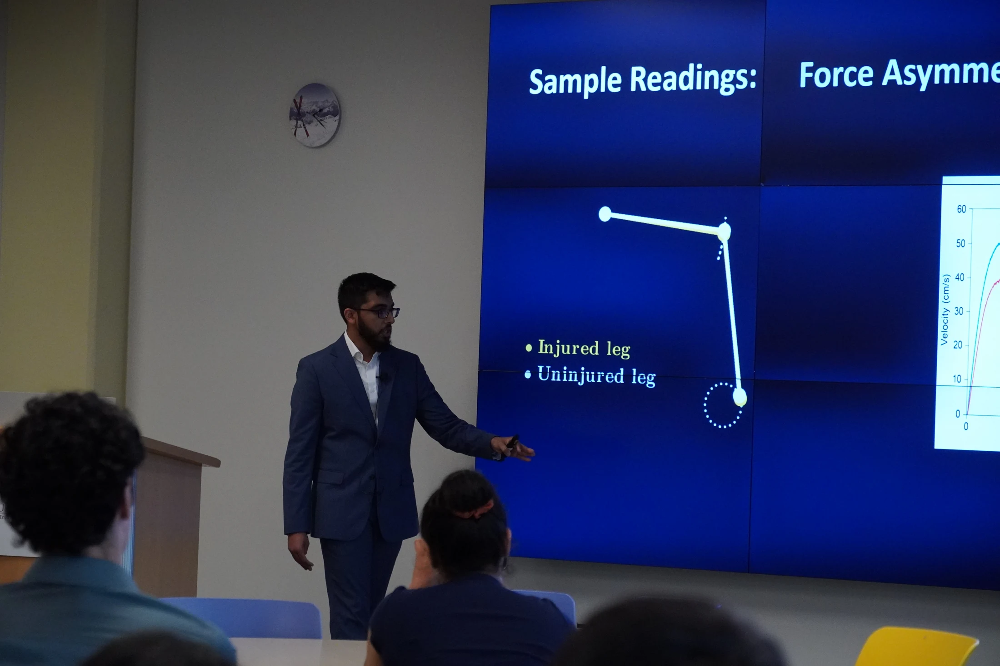
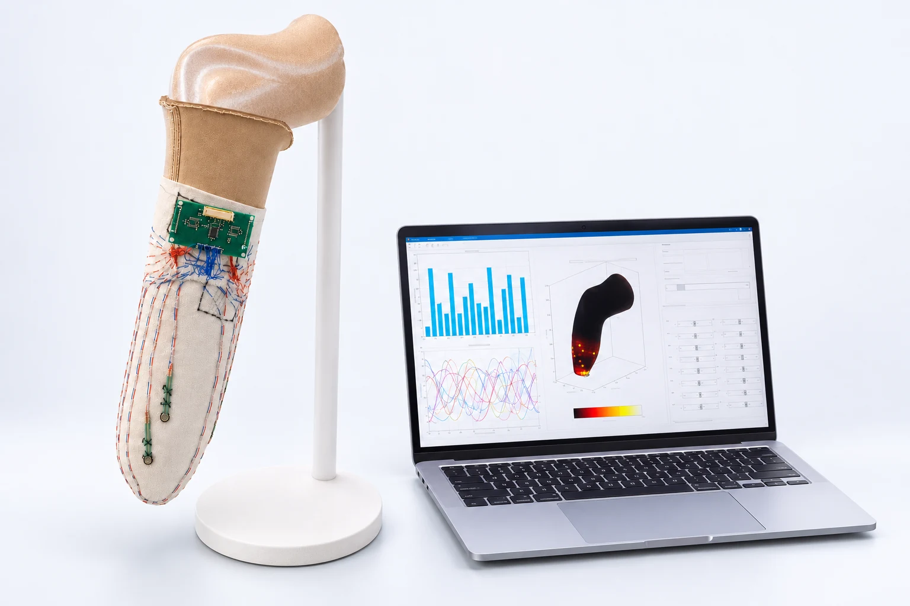
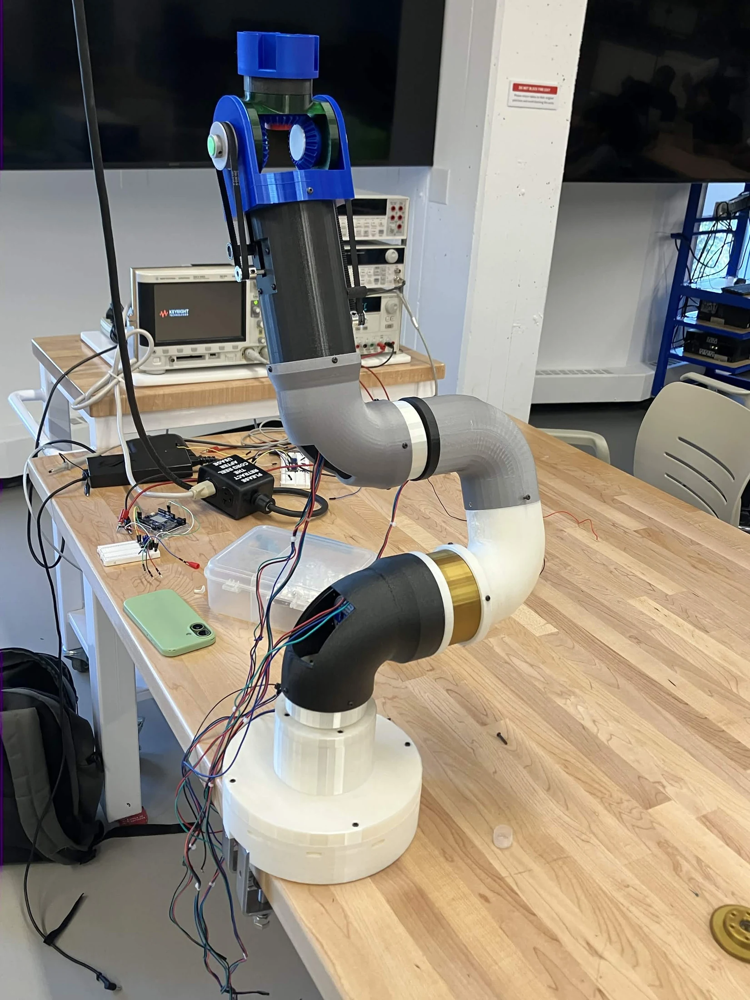

Abdul's Portfolio
I like health tech (with a focus on rehabilitation), robotics, and embedded systems.BSc. Electrical Engineering + Mechatronics Minor '29.

Signal Processing + Experimental Design · August 2026
Radar Motion Analysis on a Gym Bike
Designed experiments using FMCW radar to characterize cadence, signed velocity, lateral motion, and limb force asymmetry. Parsed sensor data using Python and developed visualizations using MATLAB.
Read More
Wearable Tech Design · May 2026
Prosthetic Sock Sensor Array
Designed a pressure-sensing prosthetic liner system with a custom stitched sensor array, PCB, embedded firmware on an ESP32, and a wireless MATLAB visualization interface.
Read More
Robotics + Motor Control · 2026
Waybionic Robotic Arm Controls
Designing joint-controller electronics and integrating the arm's base safety, power, wireless control, CAN communication, and actuator test systems.
Read More